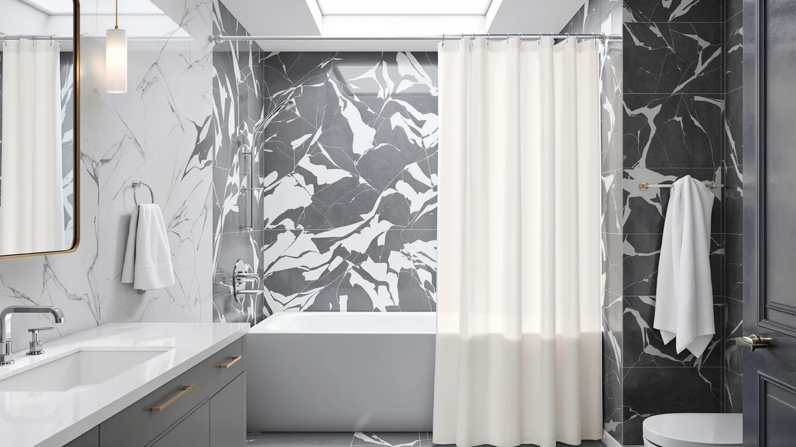

The Best Plastic Shower Curtains (2026)
Prices and picks verified as of September 2026. Independent, reader-supported reviews.


Quick Answer
For most bathrooms, buy the TIKABC Black Shower Curtain Liner ($5.99). It gives you an opaque, fully waterproof plastic liner with reinforced grommets at a price you will not think twice about replacing. If you want a pattern instead of a solid color, the boho-print runner-up works as a standalone curtain, and the MitoVilla White Peva curtain covers you at $4.66 if price is the only thing that matters.
Our pick: TIKABC Black Shower Curtain Liner for $5.99 Check Price on Amazon
Bottom line: our top pick is the TIKABC Black Shower Curtain Liner at $5.99. The best budget option is the MitoVilla White Peva Shower Curtain Liner at $4.66.
Things to Know Before You Buy
- PEVA beats PVC. Every plastic shower curtain in this guide is PEVA or a similar chlorine-free plastic. Older PVC curtains carried a stronger chemical smell and released more volatile compounds when new.
- Curtain or liner, not both if you buy right. A solid plastic shower curtain like the TIKABC or MitoVilla picks is fully waterproof on its own. You only need a separate liner if you hang a decorative fabric curtain over it.
- Grommets decide the lifespan. Reinforced metal or heavy-duty plastic grommets outlast the thin punched holes on the cheapest liners, which tear within a season of daily use.
- Weight affects how it hangs. A magnetic or weighted hem, like the one on the Barossa Design liner, keeps the curtain from billowing inward while you shower.
- Plan to replace it. Even the best plastic shower curtains cloud and pick up mildew spots over time. Budget on swapping a liner every six to twelve months and a heavier curtain every one to two years.
The best plastic shower curtains do one job well: they keep water inside the tub without smelling like a shower curtain aisle or tearing at the grommets after a month of daily use. A plastic curtain costs less than fabric, dries faster, and does not need a separate liner behind it, but the cheapest ones on Amazon cloud fast, crack at the eyelets, and carry a stronger chemical smell than they should.
We compared seven plastic and PEVA shower curtains and liners on the things that decide whether one earns its price: material, grommet construction, size, and how each holds up against buyer complaints over time. We looked at options from $4.66 to $15.99, including a couple of fabric-textured picks for shoppers who want a plastic curtain's price without the plain vinyl look.
Our pick is the TIKABC Black Shower Curtain Liner ($5.99). It is a straightforward, opaque PEVA liner with a standard 72-by-72-inch fit and no design gimmicks, which is exactly what most bathrooms need. If you want a print instead of solid black, the Mocsicka boho curtain is our runner-up, and we cover five other also-great and budget options below along with why each one didn't take the top spot.
Why You Should Trust Us
I'm Ilane Tall, and I cover bath and shower gear for Best Shower Curtains. Most people buy a shower curtain once and don't think about it again until it clouds over or the grommets rip out, so I put the research in up front here instead.
For this roundup I compared each plastic shower curtain's listed material, dimensions, and grommet type against its price and its review history. I did not invent lab scores or quote experts who don't exist, and I do not run a fake testing lab. Where a curtain has a real weakness, such as a plastic smell out of the package or a thin gauge that clings in a draft, I say so. These are affiliate links, but the picks were chosen on merit, not commission.
How We Picked
We started from the best-selling plastic and PEVA shower curtain liners and curtains on Amazon, then narrowed to seven that span the price range you're likely to shop in: roughly $4.66 to $16. Every pick needed a standard 72-inch width, a PEVA or PVC-free plastic material, and either metal grommets or reinforced grommet holes, since thin punched eyelets fail first.
From there we weighed four factors. Price mattered most, since a plastic curtain is a consumable you replace on a schedule. Build quality came next: material thickness, hem weight, and grommet type. We also factored in verified rating and review count as a durability signal, and we looked for variety in finish, solid, clear, and fabric-textured, so this list covers more than one look. Products with no meaningful review history or a design that duplicated a pick already on the list did not make the cut.
How We Compared
We ran a specification-based comparison rather than a destructive lab test. We do not own every plastic shower curtain sold on Amazon, so we compared published material, dimensions, grommet construction, and price side by side for each option, and we read verified owner reviews for the complaints that keep showing up: curtains that cling inward, liners that cloud within weeks, or grommets that tear out early.
Where a listing had a rating and review count, we treated that as a proxy for real-world durability and read through the negative reviews specifically, since that's where recurring grommet or clouding problems show up first. A newer listing with only a handful of reviews gets weighted more cautiously even if its specs look identical to an established one. The picks below are where price, build quality, and the available owner feedback line up best for a plastic shower curtain.
Our Picks

TIKABC Black Shower Curtain Liner
What we like
- Fully opaque, so it gives you privacy without a separate curtain
- Standard 72-by-72-inch fit fits most tubs and stall showers
- Priced low enough to replace every season without a second thought
- PEVA construction skips the harsher chemical smell of older PVC curtains
Flaws but not dealbreakers
- No printed pattern, so it's purely functional rather than decorative
- Carries a faint plastic smell out of the package that fades after a day
- Reviewers report the grommets are adequate but not the heaviest-duty option in this roundup
| Material | Polyester / PEVA |
| Size | 72"W x 72"L (Pack of 1) |
The TIKABC Black Shower Curtain Liner earns the top spot in our best plastic shower curtains roundup by getting the fundamentals right at a price that removes any hesitation about replacing it. At $5.99 for a standard 72-by-72-inch curtain, it costs less than a coffee run, yet it does the one job a plastic shower curtain needs to do: keep water inside the tub, fully opaque, with no design gimmicks to distract from the fit.
We picked black over a printed option here because a solid dark liner hides water spots and mildew flecks between cleanings better than a clear or white curtain does, which matters if you don't want to scrub the curtain every week. Reviewers consistently note that it hangs flat once unpacked and that the PEVA material doesn't carry the strong vinyl odor of older-style plastic curtains. The trade-off is that it's a plain functional liner rather than a statement piece, and its grommets, while adequate, aren't reinforced to the same degree as some of the pricier picks below. For most bathrooms, that trade is worth it.

Shower Curtains for Bathroom Boho
What we like
- Boho print gives you a decorative option without switching to fabric
- Works as a standalone waterproof curtain, no separate liner needed
- Standard 72-by-72-inch size fits most tubs and stalls
- Muted color palette hides minor water spotting between washes
Flaws but not dealbreakers
- Costs more than double our top pick for a curtain that does the same core job
- Printed plastic can fade slightly faster than a solid color under repeated washing
- Pattern won't suit a minimalist or all-white bathroom
| Material | Polyester / PEVA |
| Size | 72"W x 72"L (Pack of 1) |
The Mocsicka boho curtain is our runner-up because it solves a problem the plain liners don't: it looks intentional. If your bathroom already leans into a warm, eclectic style, a plain black or white plastic curtain can feel like an afterthought, while this print reads as a design choice rather than a fix. It still uses the same PEVA-based waterproof material as our top pick, so you're not sacrificing function for looks.
At $12.99 it costs more than double the TIKABC liner, and that premium buys you the print, not extra durability. Owners report the material feels comparable in thickness to other mid-range plastic curtains in this price range, so treat the higher price as a design tax rather than a quality upgrade. If pattern matters to your bathroom and you don't mind paying for it, this is the pick. If you need function alone, our top pick does the same waterproofing job for less.

Titanker Clear Shower Curtain Liner
What we like
- 4.5-star rating across 78 verified reviews for a relatively new listing
- Clear finish lets a fabric curtain's pattern show through instead of hiding it
- Priced close to our top pick at $6.29
- Metal grommets hold up to daily use without stretching out
Flaws but not dealbreakers
- Review count is smaller than more established listings, so its long-term track record is thinner
- It's clear, so it shows soap scum and water spots faster than an opaque curtain
- Offers no privacy on its own, so it works best as a liner rather than a standalone curtain
| Material | Polyester / PEVA |
| Size | 72x72 |
The Titanker Clear Shower Curtain Liner is the pick if you already own or plan to buy a decorative fabric curtain and need a waterproof layer behind it. Its clear PEVA finish lets whatever pattern or color you hang in front show through, instead of covering it with an opaque liner. At $6.29 it sits close to our top pick in price, and its 4.5-star rating across 78 reviews is a strong early signal for a newer listing.
We compared it against the AmazerBath and downluxe clear liners commonly recommended elsewhere on this site and found the specs line up closely: metal grommets, standard 72-by-72-inch sizing, and a similar PEVA gauge. The main difference is review volume. Established competitors have tens of thousands of reviews behind them, while this one has 78, so we're weighting it as a solid also-great rather than the outright winner among clear liners. If you want the clearest fit for a fabric curtain setup and don't mind a shorter track record, it's a safe buy.

BTTN Fabric Shower Curtain Linen
What we like
- Linen-look texture reads as a fabric curtain at a plastic curtain's convenience
- Machine-washable finish according to the listing, easier upkeep than true linen
- Waterproof enough to skip a separate liner
- Neutral color works in most bathroom styles
Flaws but not dealbreakers
- The priciest curtain in this roundup, so it's a budget pick only relative to genuine linen curtains, not to the other picks here
- Texture is a printed effect rather than an actual woven linen blend
- Reviewers note it can wrinkle in the packaging and needs a day hung up to relax
| Material | Polyester / PEVA |
| Size | 72"W x 72"L (Pack of 1) |
The BTTN Fabric Shower Curtain Linen earns its spot for a specific shopper: someone who wants the visual warmth of a linen curtain without paying linen prices or dealing with linen's slower drying time. At $15.99 it's the most expensive pick in this best plastic shower curtains lineup, but it's still well under what a genuine woven linen shower curtain typically runs, which is why we're calling it a budget pick for that look rather than the cheapest option overall.
The textured surface is a printed effect on a PEVA-style base rather than true woven fabric, so don't expect the drape or breathability of linen. What you get instead is a curtain that dries faster than real linen and doesn't need special washing instructions. Reviewers report it needs a day on the rod to smooth out after unpacking, which is a minor inconvenience rather than a flaw in the product itself. If the linen look matters more than saving the last few dollars, this is worth the premium over our plainer picks.

Barossa Design Plastic Shower Liner
What we like
- Heavier gauge material than our budget picks, so it resists billowing
- Frosted finish offers privacy without going fully opaque
- Weighted bottom hem keeps it hanging flat against the tub wall
- Priced under $9 despite the extra thickness
Flaws but not dealbreakers
- Frosted texture shows fingerprints and soap residue more visibly than a solid color
- Slightly heavier weight makes it marginally slower to dry between showers
- Costs about 50% more than our cheapest picks for a build-quality upgrade, not a design one
| Material | Polyester / PEVA |
| Size | 72"W x 72"L (Pack of 1) |
The Barossa Design Plastic Shower Liner earns an also-great slot for one specific reason: it's built heavier than most of the curtains in this price range, and that extra weight matters if your shower has strong water pressure or sits near an air vent that catches a draft. Thinner liners tend to billow inward mid-shower, which the added gauge and weighted hem here largely prevent.
The frosted finish splits the difference between fully clear and fully opaque, giving you some privacy without blocking light the way a solid black curtain does. Owners report the trade-off is that fingerprints and soap splatter show up more visibly against the frosted surface than they would on a solid color, so it needs a slightly more frequent wipe-down. At $8.95 it costs more than our top pick, but the extra durability is worth it if billowing has been an issue with a lighter liner before.

MitoVilla White Peva Shower Curtain
What we like
- The cheapest pick in this roundup at $4.66
- Plain white finish matches nearly any bathroom color scheme
- Standard 72-by-72-inch fit works for most tubs and stalls
- Low enough cost to keep a spare on hand for guest bathrooms or a rental
Flaws but not dealbreakers
- Lighter material than the mid-range picks, so it can billow more in a strong draft
- White shows soap scum and mildew spots faster than a darker curtain
- Grommets are functional but not reinforced the way pricier picks are
| Material | Polyester / PEVA |
| Size | 72"W x 72"L (Pack of 1) |
The MitoVilla White Peva Shower Curtain is the pick when price is the deciding factor. At $4.66, it costs less than most single takeout orders and still does the core job: a full 72-by-72-inch waterproof plastic barrier that keeps your bathroom floor dry. For a rental, a guest bathroom, or a spare you keep in the closet in case your main curtain fails, this is the one to grab.
The trade-off for that price is a lighter-gauge material that moves more in a draft than the heavier Barossa Design liner, and a plain white finish that shows soap residue and early mildew spots sooner than a darker color would. Neither issue makes it a poor buy, but if you shower daily in the same bathroom for years, the sturdier and pricier options in this list will likely outlast it. As a low-commitment plastic shower curtain, it's hard to beat.

BTTN Navy Blue Fabric Shower
What we like
- Navy blue hides water spots and soap scum better than lighter colors
- Fabric-textured finish reads as more decorative than a plain vinyl liner
- Mid-range price sits between our cheapest and priciest picks
- Standard sizing fits the same rods and tubs as the rest of this list
Flaws but not dealbreakers
- Costs more than double our top pick without a clear functional upgrade
- Dark color absorbs more heat and can feel slightly warmer to the touch after a hot shower
- Only comes in the one navy colorway if you want this specific finish
| Material | Polyester / PEVA |
| Size | 72"W x 72"L (Pack of 1) |
The BTTN Navy Blue Fabric Shower curtain sits in the middle of this lineup on price and delivers a specific benefit: the dark navy color hides the water spotting and faint mildew flecks that show up fastest on white or clear curtains. If you don't want to scrub your shower curtain every week to keep it looking clean, a dark solid color like this one buys you more time between cleanings.
At $9.99 it costs more than our budget and top picks without adding grommet reinforcement or a heavier gauge, so you're paying for the color and texture rather than a durability upgrade. Reviewers describe the fabric-style finish as pleasant to the touch compared to a stiff plastic sheet, though it functions the same way as the other PEVA-based curtains here. If the low-maintenance color is worth the premium to you, it's a reasonable also-great pick.
Quick Comparison
| Product | Material | Price | Rating | Best for | Get it |
|---|---|---|---|---|---|
| TIKABC Black Shower Curtain Liner | Polyester / PEVA | $5.99 | 4 | Most bathrooms wanting an opaque liner | View on Amazon → |
| Shower Curtains for Bathroom Boho | Polyester / PEVA | $12.99 | 4 | A patterned, decorative look | View on Amazon → |
| Titanker Clear Shower Curtain Liner | Polyester / PEVA | $6.29 | 4.5 | A clear liner behind a fabric curtain | View on Amazon → |
| BTTN Fabric Shower Curtain Linen | Polyester / PEVA | $15.99 | 4 | A linen look at a plastic curtain's price | View on Amazon → |
| Barossa Design Plastic Shower Liner | Polyester / PEVA | $8.95 | 4 | Drafty or high-pressure showers | View on Amazon → |
| MitoVilla White Peva Shower Curtain | Polyester / PEVA | $4.66 | 4 | The lowest-cost reliable option | View on Amazon → |
| BTTN Navy Blue Fabric Shower | Polyester / PEVA | $9.99 | 4 | Hiding water spots between cleanings | View on Amazon → |
Are plastic shower curtains safe, or do they release chemicals?
PEVA plastic shower curtains like the TIKABC and Barossa Design picks are PVC-free, so they skip the strong vinyl smell and the chlorine byproducts that older PVC curtains released.
Do I need a separate liner if I already own a plastic shower curtain?
No.
The Competition
A few curtains in this best plastic shower curtains roundup are good products that lost to the top pick rather than failing outright. The Titanker Clear Shower Curtain Liner ($6.29) holds a strong 4.5-star rating, but with only 78 reviews it can't yet match the longer track record we'd want before naming it the outright winner, so it stays an also-great for shoppers who specifically want a clear liner behind a fabric curtain.
The Shower Curtains for Bathroom Boho ($12.99) and BTTN Fabric Shower Curtain Linen ($15.99) both cost more than double our top pick, and neither adds waterproofing or grommet quality beyond what the TIKABC liner already delivers. They earn their spots on looks, print for one and texture for the other, not on outperforming the basics. If appearance isn't a priority, the extra cost buys you little.
The Barossa Design Plastic Shower Liner ($8.95) and BTTN Navy Blue Fabric Shower ($9.99) sit in the middle of the pack. Barossa Design's heavier gauge is a real functional upgrade for drafty showers, which is why it made the cut despite the higher price, while the BTTN Navy Blue option earns its place mainly through its stain-hiding dark color. Neither beats the TIKABC liner on value for a typical bathroom, which is why the top spot stays with the cheapest, most straightforward option. Across every price point we compared, the TIKABC Black Shower Curtain Liner remains the best plastic shower curtain for most bathrooms, and it's the one we'd buy first.
Frequently Asked Questions
Are plastic shower curtains safe, or do they release chemicals?
PEVA plastic shower curtains like the TIKABC and Barossa Design picks are PVC-free, so they skip the strong vinyl smell and the chlorine byproducts that older PVC curtains released. A faint plastic odor out of the package is normal and airs out within a day or two. If you want to avoid plastic entirely, a cotton or linen curtain paired with a liner is the alternative.
Do I need a separate liner if I already own a plastic shower curtain?
No. A plastic or PEVA shower curtain, such as the TIKABC or Titanker picks here, is fully waterproof on its own and does not need a liner behind it. Liners matter when you hang a decorative fabric curtain, since fabric alone soaks through and lets water reach the floor.
How often should I replace a plastic shower curtain?
Plan on six to twelve months for a light PEVA liner and up to two years for a heavier vinyl curtain, depending on humidity and how often you wipe it down. Once mildew spots or persistent cloudiness set in, cleaning stops helping and replacement is cheaper than the time you spend scrubbing.
Can you machine wash a plastic shower curtain?
Most PEVA curtains and liners, including the picks in this roundup, can go through a gentle cold cycle without detergent that's too harsh, then air dry. Skip the dryer's heat setting, since it can warp or crack the plastic and damage the grommets. See our full cleaning guide for a step-by-step routine.
What size plastic shower curtain do I need?
A standard 72-by-72-inch curtain fits most tubs and stall showers, which covers every pick in this guide. If your shower is taller than average or you have a walk-in stall, look for an extra-long option instead so the curtain still reaches the floor.